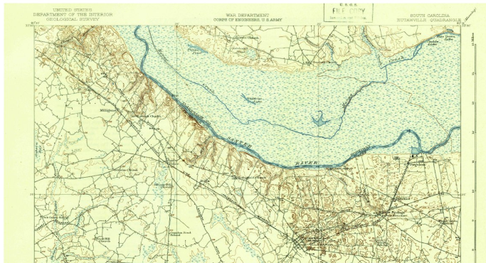

Discover the historic Santee River country through surveys made before Lake Marion was built, and explore a seventeenth-century view of the southeastern coast of North America. Prices and orders will be announced once print quality and fulfillment have been confirmed.
1920 · MANNING HISTORICAL SURVEY
Historic Wyboo Creek & Potato Creek

In 1920, Wyboo Creek and Potato Creek wound through a landscape of farms, rural roads, churches, and small communities. This survey records Wyboo Church, St. Marks Church, Church Branch, and the routes that connected the countryside long before Lake Marion altered the shoreline. It is a chance to revisit the familiar Wyboo area as it appeared more than a century ago.
Customer interest open · Not yet available for purchase
1920–1921 · CHICORA HISTORICAL SURVEY
Black Oak Island & Rocks Creek School

Before Lake Marion, Black Oak Island was part of the old Santee River country, where the Santee and Little rivers shaped the surrounding bottomlands. This early-twentieth-century survey preserves the waterways, historic roads, and landmarks such as Rocks Creek School that belonged to the region before the reservoir changed it.
Crop reference approved · Not yet available for purchase
1921 · EUTAWVILLE HISTORICAL SURVEY
Eutawville — Original Santee River Corridor

The 1921 survey of the Eutawville region captures the Santee River as it once flowed through its broad lowland valley. The winding river, floodplain, creeks, and old roads tell the story of the communities and countryside that existed before the Santee Cooper project transformed this part of South Carolina.
Crop reference approved · Not yet available for purchase
1640 · WILLEM BLAEU
Willem Blaeu — Early Map of the Southeast

Willem Blaeu's 1640 map of southeastern North America reflects the geographic knowledge of European cartographers in the seventeenth century. From its historic place names to its portrayal of the Atlantic coastline and inland country, this map captures a view of the Southeast centuries before the modern communities and reservoirs we know today.
Reproduction terms, print proof and price pending
Historical Map CollectionThese maps preserve early views of the waterways, roads, settlements and countryside of the Santee region. The three regional surveys date to the early 1920s, while Willem Blaeu's map dates to 1640.
Prices and orders: Print sizes, prices, and shipping are being finalized. No paid orders or preorders are open yet. To register interest, contact the administrator of All Things Santee Cooper and name the map.